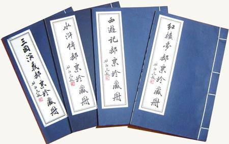

红楼梦
西游记
水浒传
三国演义
首页

四大名著是指四大中国古典文学名著《三国演义》（作者 罗贯中）、《水浒传》（作者 施耐庵）、《西游记》（作者 吴承恩）、《红楼梦》（作者 曹雪芹、高鹗）。诞生于明清时期的四大名著是中国古典文学的精品，承载着中国文化的精髓，是学习中国文化的必读著作。 1、《水浒传》作者简介及内容简介 《水浒传》作者施耐庵简介：施耐庵（1296年—1371年）是元末明初的文学家，，今江苏兴化人。博古通今，才气横溢，相传是孔子七十二弟子之一施之常的后裔。 《水浒传》内容简介：《水浒传》描写北宋末年以宋江为首的一百零八位好汉在梁山起义，以及聚义之后接受招安、四处征战的故事，塑造了宋江、吴用、李逵、武松、林冲、鲁智深等梁山英雄，形象地描绘了农民起义从发生、发展直至失败的全过程，深刻揭示了起义的社会根源，满腔热情地歌颂了起义英雄的反抗斗争和他们的社会理想，也具体揭示了起义失败的内在历史原因。《水浒传》是中国历史上最早用白话文写成的章回小说之一。 《水浒传》开篇语：试看书林隐处，几多俊逸儒流。虚名薄利不关愁，裁冰及剪雪，谈笑看吴钩。评议前王，并后帝，分真伪，占据中州，七雄绕绕乱春秋。兴亡如脆柳，身世类虚舟。见成名无数，图名无数，更有那逃名无数。刹时新月下长川，江湖桑田变古路。讶求鱼橼木，拟穷猿择木，恐伤，弓远之曲木，不如且覆掌中杯，再听取新声曲度。 2、《西游记》作者简介及内容简介 《西游记》作者吴承恩简介：施耐庵(1500年-1582年是明代杰出的小说家，是中国古典四大名著之一《西游记》的作者。吴承恩字汝忠，号射阳山人，淮安府山阳县（今江苏省淮安区）人，祖籍安徽省桐城县高甸（今枞阳县雨坛乡高甸），因随祖父迁徙至淮安府（今江苏省淮安市淮安区）。 《西游记》内容简介：《西游记》是中国古代一部浪漫主义长篇神魔小说，主要描写了唐僧、孙悟空、猪八戒猪悟能、沙僧沙悟净师徒四人去西天取经，历经九九八十一难最后终于取得真经的故事。《西游记》内容分为三大部分：第一部分（一到七回）介绍孙悟空的神通广大，大闹天宫；第二部分（八到十二回）叙三藏取经的缘由；第三部分（十三到一百回）是全书故事的主体，写悟空等降伏妖魔，最终到达西天取回真经。《西游记》书中孙悟空这个形象，以其鲜明的个性特征，在中国文学史上立起了一座不朽的艺术丰碑。 《西游记》开篇语：混沌未分天地乱，茫茫渺渺无人见。自从盘古破鸿蒙，开辟从兹清浊辨。覆载群生仰至仁，发明万物皆成善。欲知造化会元功，须看《西游释厄传》。 3、《红楼梦作者简介及内容简介 《红楼梦》作者曹雪芹、高鹗简介：曹雪芹（约1715—约1763）是清代著名小说家，名沾，字梦阮，号雪芹，又号芹溪、芹圃。曹雪芹祖籍辽宁省辽阳市，出生地为江宁（今江苏南京），先祖为中原汉人，满洲正白旗包衣出身。《红楼梦》是曹雪芹“披阅十载，增删五次”，“字字看来皆是血，十年辛苦不寻常”的心血之作，今传《红楼梦》120回本，其中前80回的绝大部分出于曹雪芹的手笔，后40回则为高鹗所续写。高鹗（约1738-约1815年）是清代文学家，字兰墅，一字云士。因酷爱小说《红楼梦》，别号“红楼外史”。汉军黄旗内务府人，祖籍铁岭（今属辽宁），先世清初即寓居北京。高鹗除有《红楼梦》后40回续书外，另有诗文著作多种，《清史稿·文苑二》著录有《兰墅诗抄》，杨宗羲《八旗文经》著录《高兰墅集》，今俱佚。现存《兰墅十艺》（草稿本）、《吏治辑要》及诗集《月小山房遗稿》、词集《砚香词·簏存草》等。 《红楼梦》内容简介：《红楼梦》是章回体长篇小说，中国古代四大名著之首，原名《脂砚斋重评石头记》，又名《情僧录》、《风月宝鉴》、《金陵十二钗》、《还泪记》、《金玉缘》等。《红楼梦》是一部含笑的悲剧，描写了一个封建贵族家庭由荣华走向衰败的三代生活，而且还大胆地控诉了封建贵族阶级的无耻和堕落，指出他们的种种虚伪、欺诈、贪婪、腐朽和罪恶。红楼梦塑造的主要人物形象：《红楼梦》中的100多个人物形象各具姿态，大都有自己鲜明的个性特征，尤其是主要人物形象如贾宝玉、林黛玉、薛宝钗、贾母、王熙凤、史湘云、贾探春等，给我们留下了深刻的印象。 《红楼梦》开篇语：满纸荒唐言，一把辛酸泪。都云作者痴，谁解其中味？ 4、《三国演义》作者简介及内容简介 《三国演义》作者罗贯中简介：罗贯中（约1330年－约1400年）是元末明初小说家，《三国演义》的作者，山西并州太原府人罗贯中写作的剧本：《赵太祖龙虎风云会》、《忠正孝子连环谏》、《三平章死哭蜚虎子》。罗贯中写作的小说：《隋唐两朝志传》、《残唐五代史演义》、《三遂平妖传》、《粉妆楼》、《水浒传》（与施耐庵合著）、《三国演义》。 《三国演义》内容简介：《三国演义》（也称作《三国志通俗演义》）描写的是从东汉末年到西晋初年之间近一百年的历史风云。全书反映了三国时代的政治军事斗争，反映了三国时代各类社会矛盾的渗透与转化，概括了这一时代的历史巨变，塑造了一批咤叱风云的英雄人物。《三国演义》故事开始于刘备、关羽、张飞桃园三结义，结束于司马氏灭吴开晋，描写了东汉末年和三国时代魏、蜀、吴三国鼎立的局面及晋朝开国历史。文字浅显、人物形象刻画深刻、情节曲折、结构宏大。《三国演义》刻画了近200个人物形象，其中诸葛亮、曹操、关羽、刘备等人性格尤为突出。《三国演义》是中国第一部长篇章回体小说。 《三国演义》开篇语：滚滚长江东逝水，浪花淘尽英雄。是非成败转头空。青山依旧在，几度夕阳红。白发渔樵江渚上，惯看秋月春风。一壶浊酒喜相逢。古今多少事，都付笑谈中。